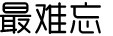
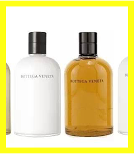

- 我觉得是基因决定了想法，成为旅行者的基因一直藏在我的身体里，并且在适当地时候迸发了，决定做职业旅行者或许只是一个瞬间的决定，但这是个漫长的认识和积累的过程。
- 这股旅行基因的养成源自我的童年，是个潜移默化的过程，从记事起的每个寒假和暑假，父母奖励我好成绩的奖品就是旅行，那时候我和父母一起几乎是游遍了祖国的所有省份，旅行次数多了，慢慢地旅行就翻转过来，成为了促进我学习的动力和诱因。小学、初中和高中的12年，包括大学的前三个学年，整整20多个寒假和暑假，我几乎都是在旅行中度过的，旅行的思维和观念已经牢牢扎根了，注定了我在未来会从事相关职业。 毕业后进入金融行业，读研再参加各种
- 融考试，赶上上一波牛市，这几年的工作确实很忙而且很大的压力，所以旅行成为了我给自己的奖励，几次欧洲之旅让我彻底地爱上了旅行，那种全身心的放松、那种海绵一样的知识补充、形形色色的人和物、几百年几千年的历史文化，都太吸引我了，并且从这个时候已经开始有计划、有意识在做一点点积累，包括博客、微博、分享会等等，所以说很多朋友不理解我为什么突然就辞去了一份高收入的工作，其实这个决定只是一瞬间的，但我之前的整个人生都是在为这一刻做准备吧。 更多>>
- 启 程
- 第一次
- 最难忘
- 新尝试
- Q&A
“成为旅行者的基因一直藏在我的身体里，并且在适当的时候迸发了”
她爱旅行，博客中记录着走遍6大洲33国的足迹。
她也爱美妆，她在途中发现美，然后边走变美。
BLOG地址：
http://bbs.mcchna.com/home.php?mod=space&uid=525598&do=blog&id=390443
- “德国可以说是我的旅行初恋，那总是 最美好的记忆” 第一次长时间的出境游是德国。我认为德国是一个很好的起点，那里有一个旅行者所需要的一切，浓厚的历史文化、与众不同的人文风情、安全的旅行环境，一切都是个很完美的开始，德国确实非常非常丰富，德国在很多方面影响着欧洲甚至整个世界，相对的这个国家也在汲取着来自欧洲和世界的营养。 更多>>
- “从那一次南法开始，我希望以后的旅 行都是我们一起” 我的自己旅行并不是一个人走或者独自上路。概念中，我的第一次自己旅行是去南法自驾，和大学的闺蜜一起玩了三周，从巴黎到马赛一路狂奔嗨翻天，为什么这是自己的旅行，因为当时我的男朋友并不能陪我一起去，所以在很大程度上造成了一种孤单的感觉，让我感觉是‘自己的旅行’，从那一次南法开始，我希望以后的旅行都是我们一起。 更多>>
小甘菊敏感脸部保湿霜 小甘菊系列在国内也非常火爆！推荐的这款脸部保湿霜，含有德国洋甘菊，而且保湿滋润，绝对是敏感肌肤的救星！
LADUREE马卡龙彩妆系列 LADUREE推出的玫瑰腮红片、蛋形腮红膏以及块状腮红都像艺术品般美妙。让你甜蜜不只吃入口中，还能随身携带！

“形形色色的朋友加入旅途，丰富了我的整个行程”
- 每一次旅行，我都会用不同的方式去记录和回忆，都是非常难忘的，如果要加个‘最’字那么一定是不能复制的吧，这段经历可以加个最字：是我的‘独自穿越欧洲46天’。那一次我赢得了梦想旅行家的5万元旅行基金，随后就发生了一系列的故事，先是在国内准备阶段的离职，而后是定计划、定线路等等，随后在第一站土耳其丢了钱包和卡，往后的日子都是靠国内的朋友通过西联汇款度过的，这一次经历也让我在以后的旅行中、以及和朋友们的分享中总是会强调‘安全’，此后的故事中还有形形色色的朋友们加入，有在俄罗斯留学的留学生、有独自去欧洲旅行的小姑娘、有生活在希腊的偷渡客、有庄园主和时尚博主，这些人物的加入丰富了我的整个行程，当然还有土耳其、希腊、马耳他、意大利的风景人文，我觉得很难复制下一次了。 更多>>
Apivita 以为在希腊只能赏赏风景？那你就错啦！在希腊一定要关注最近超级火的小众品牌Apivita，创立于1979年，以生产纯天然的产品著名。产品包装就很吸睛，价格不贵，功效也很棒！
百年Manetti Roberts1867古老玫瑰水 来自意大利古城佛罗伦萨的纯天然泉水！意大利传统皮肤保养品牌，意大利女人都认为它是日常保养不可缺少的东西，至今此品牌仍然沿用古老的制作方法.。
“试睡员不是在判断一个床垫的软硬、盥洗设备的品牌，而是在品评这酒店 的文化”
-
试睡员，或者具体点说酒店试睡员，是我在旅行中诸多工作中的一环，这是一份需要积累的工作，首先你要明白你想要什么，你是在期待惊喜、还是简单舒适就好，你是在期待超五星级的华丽、还是更喜欢田园风格，每个人的背景和身份截然不同，对一个酒店的评价自然也就不尽相同，比如我们在波士顿去过一家酒店Mirbeau inn & spa，如果你没有知识的积累，可能会觉得这是一家很普通的乡村酒店，但如果你喜欢莫奈，你去过巴黎，你就会爱上这里，因为它完全把莫奈的画搬到了现实中，就像复刻了莫奈在吉维尔的花园，你就会更加投入和沉醉于酒店的这种创造，因为你理解酒店主为什么要这样做，所以试睡员不是在判断一个床垫的软硬、盥洗设备的品牌，而是在品评这个酒店的文化。 更多>>
 许多国外的星级酒店，都会提供超大牌的洗护产品，绝对不能错过！爱马仕香皂、宝格丽洗发乳、欧舒丹身体膏、菲拉格慕全套洗护……还有一些你可能没有听过的，却好用之极的消肿高端护肤品，这些都是花钱住高端酒店绝对不能错过的享受瞬间！
-
为什么叫“手边巴黎”
我从小就喜欢巴黎，希望浪漫气息就在手边，如影随形。
-
为什么叫“手边巴黎”
我从小就喜欢巴黎，希望浪漫气息就在手边，如影随形。
-
为什么叫“手边巴黎”
我从小就喜欢巴黎，希望浪漫气息就在手边，如影随形。
-
为什么叫“手边巴黎”
我从小就喜欢巴黎，希望浪漫气息就在手边，如影随形。